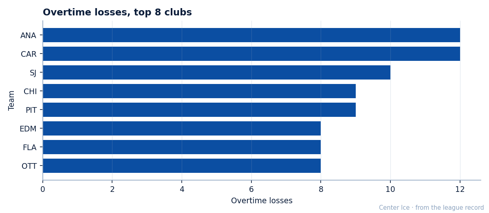
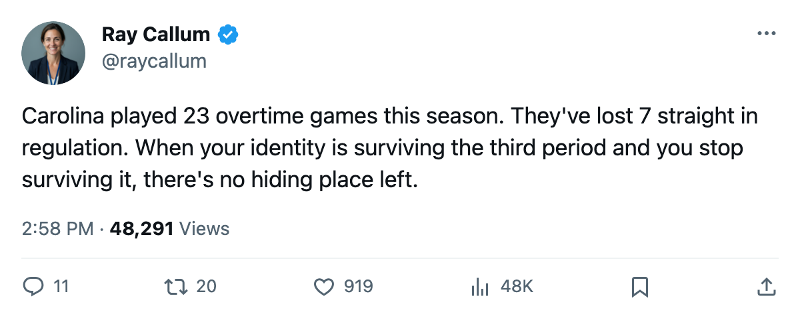

Notes from the Southeast: Carolina can't even make it to overtime anymore
The Hurricanes played 23 overtime games this season. Their current 7-game slide is all regulation.
 Ray CallumSenior correspondent · Home Ice Network
Ray CallumSenior correspondent · Home Ice Network
 Carolina Hurricanes has the most overtime losses in the league, tied with
Carolina Hurricanes has the most overtime losses in the league, tied with  Mighty Ducks of Anaheim at 12. Between those 12 defeats and 11 overtime wins, the Hurricanes have spent 23 games this season playing past 60 minutes. That is more than a third of a 64-game schedule.
Mighty Ducks of Anaheim at 12. Between those 12 defeats and 11 overtime wins, the Hurricanes have spent 23 games this season playing past 60 minutes. That is more than a third of a 64-game schedule.
The pattern broke on 2005-02-14. Seven regulation losses later, the Hurricanes have not reached overtime once. The streak reads: 3-2 to  Washington Capitals, 4-2 at
Washington Capitals, 4-2 at  Philadelphia Flyers, 3-1 at
Philadelphia Flyers, 3-1 at  Toronto Maple Leafs, 4-3 to
Toronto Maple Leafs, 4-3 to  Boston Bruins, 4-1 to
Boston Bruins, 4-1 to  Tampa Bay Lightning, 3-2 to Mighty Ducks of Anaheim, 4-2 at
Tampa Bay Lightning, 3-2 to Mighty Ducks of Anaheim, 4-2 at  Phoenix Coyotes. Outscored 13-25.
Phoenix Coyotes. Outscored 13-25.

The 7-game slide is the longest active losing streak in the conference. It dropped Carolina Hurricanes from 4th in the East to 5th, holding 74 points on a 20-21-12 record. The season goal differential, -4, does not match the depth of this skid.
The club has zero players on the injured list.  Rod Brind'Amour79 returned from a back designation in January and the rest of the roster is available. The same men who played 23 overtime games through January cannot stay in games for 60 minutes now.
Rod Brind'Amour79 returned from a back designation in January and the rest of the roster is available. The same men who played 23 overtime games through January cannot stay in games for 60 minutes now.
 Kevin Weekes90 has started 53 of 64, 83 percent of the workload. He is 27-25 with 2 shutouts on the season. In the 7-game skid he was outplayed in every start.
Kevin Weekes90 has started 53 of 64, 83 percent of the workload. He is 27-25 with 2 shutouts on the season. In the 7-game skid he was outplayed in every start.
No home dates this week. Carolina Hurricanes plays at Toronto Maple Leafs on 2005-03-01, at Washington Capitals on 2005-03-02, at Boston Bruins on 2005-03-04, at  Pittsburgh Penguins on 2005-03-06, and at
Pittsburgh Penguins on 2005-03-06, and at  Minnesota Wild on 2005-03-07. Five straight on the road for a club that is 12-20 away from Raleigh.
Minnesota Wild on 2005-03-07. Five straight on the road for a club that is 12-20 away from Raleigh.
The season series against Tampa Bay Lightning went 1-1-2 with 1 overtime win, the closest series in the division at 4 one-goal games in 5 meetings. Carolina Hurricanes and Tampa Bay are done for the year. The 74 points sit 10 behind 8th-place  New York Islanders with 18 games left. The math is alive. The form is not.
New York Islanders with 18 games left. The math is alive. The form is not.
